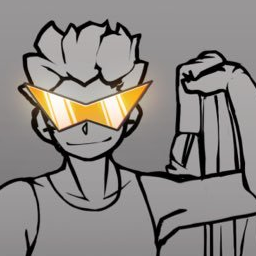

About Us
Sonic Onset Adventure is a Sonic fangame that takes heavy inspiration from the Sonic style of the early 2000s. Following the Adventure formula and physics closely and providing what we hope will be a fun game at the same time!

DigitalPurgatory
Project lead, animation, character modelling, UI work. This guy can do it all.
He keeps everything going and directs us to make the best game we can!
CuckyDev
It's the programmer, and the second in command, I suppose.
He single handedly programs the entire game, from the backend systems to the physics.